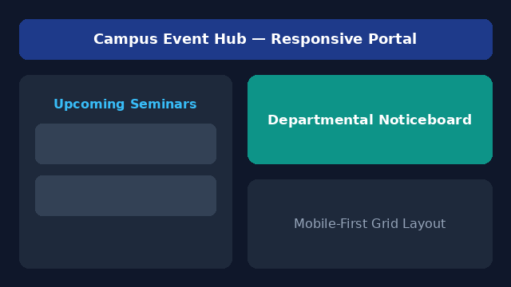
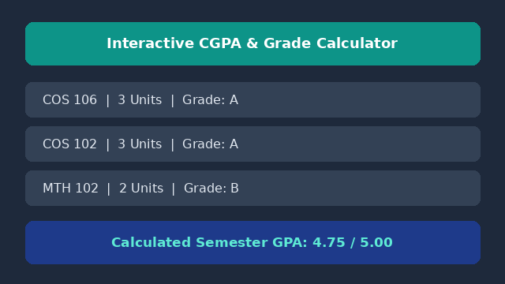
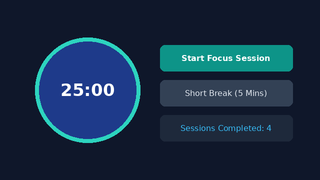

HTML5 • CSS Grid • Responsive
Campus Event Hub
A mobile-friendly university noticeboard and event portal where students can view upcoming seminars, coding meetups, and departmental announcements.
Sample web development projects demonstrating responsive design and interactive JavaScript.

A mobile-friendly university noticeboard and event portal where students can view upcoming seminars, coding meetups, and departmental announcements.

A browser-based GPA calculator built with plain JavaScript that lets students enter course units and grades to compute their semester GPA automatically.

A clean study timer featuring 25-minute focus sessions, 5-minute breaks, and session tracking to help university students stay focused during exam revision.
Watch a quick overview of this multi-page portfolio and academic planner: